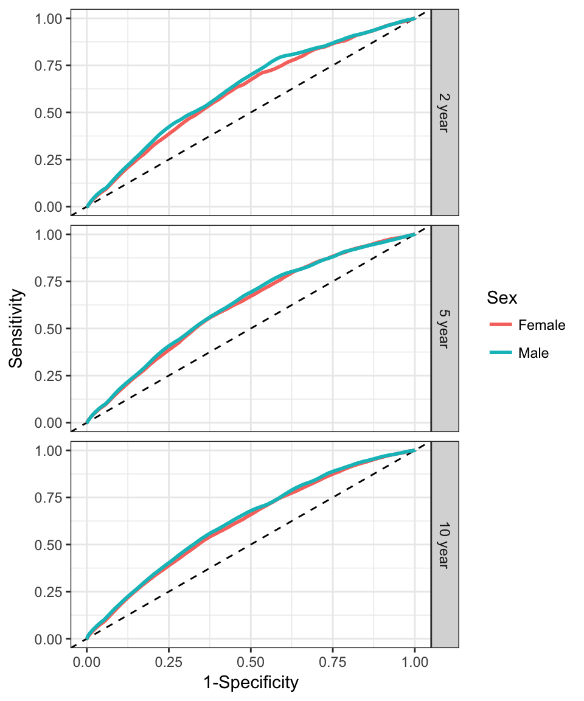
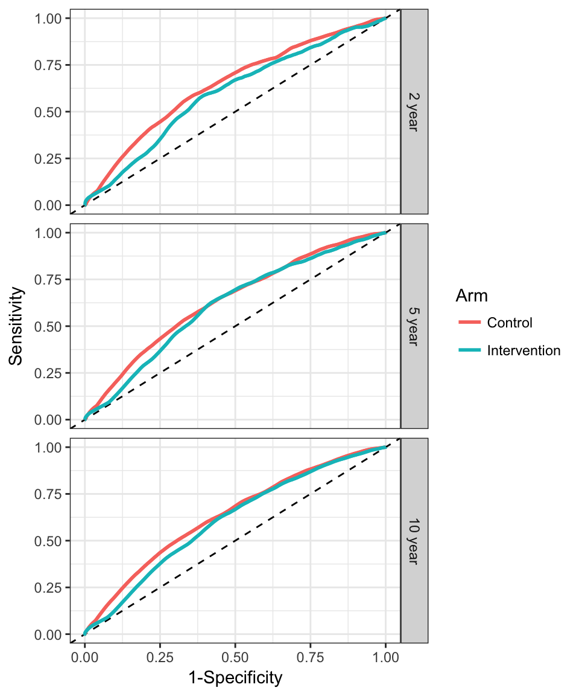
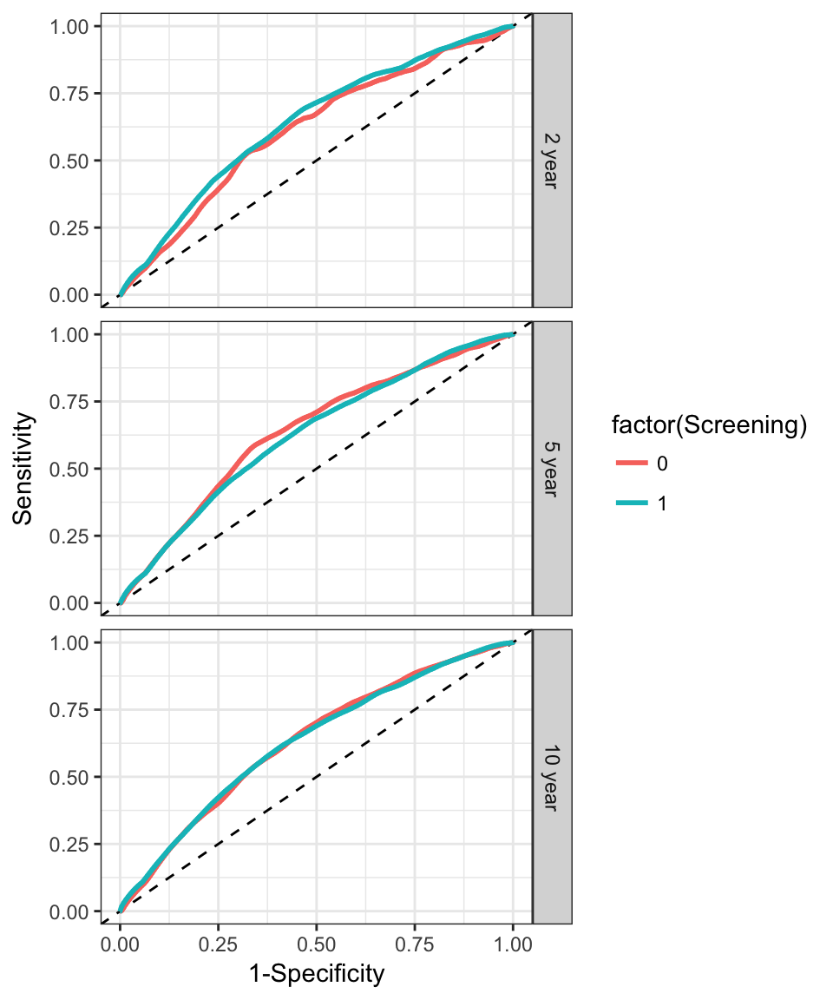
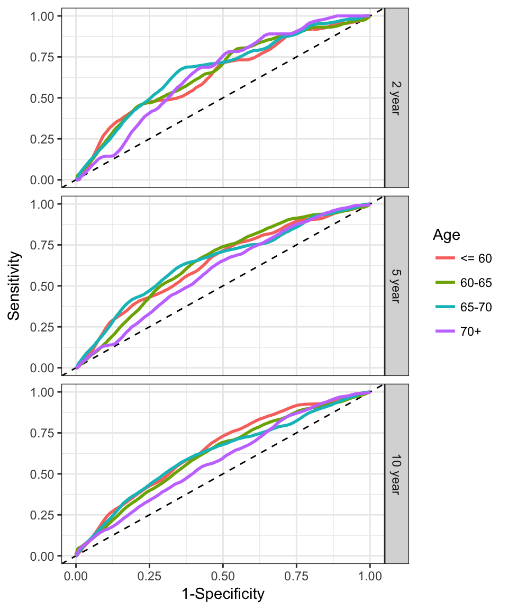
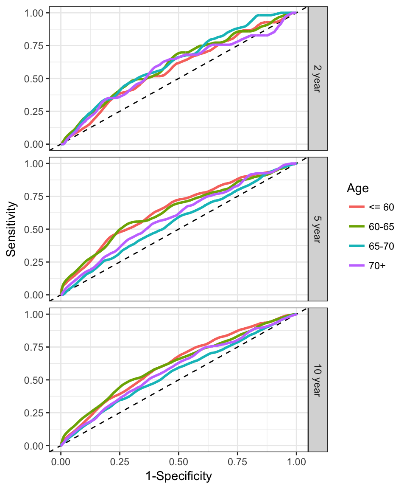

We assess model discrimination by estimating t-year (cumulative/dynamic) ROC curves, which display true positive and false positive rates across a range of threshold values used to classify an observation as ‘high-risk’. Area under the ROC curves (AUC) are also estimated.
We show ROC curves for 2-year, 5-year and 10-year prediction times. First we estimate ROC/AUC for the entire cohort, and then we stratify on categorized age groups.
Estimation methods employ a nearest neighbor approach that accounts for competing risks. More details can be found in the manuscript referenced below.

Table of AUC estimates:
| Sex | 2 year | 5 year | 10 year |
|---|---|---|---|
| Female | 0.619 | 0.623 | 0.618 |
| Male | 0.67 | 0.652 | 0.647 |

Table of AUC estimates:
| Arm | 2 year | 5 year | 10 year |
|---|---|---|---|
| Control | 0.643 | 0.637 | 0.635 |
| Intervention | 0.599 | 0.612 | 0.607 |

Table of AUC estimates:
| Screening | 2 year | 5 year | 10 year |
|---|---|---|---|
| 0 | 0.614 | 0.638 | 0.631 |
| 1 | 0.638 | 0.625 | 0.631 |

Table of AUC estimates:
| Age | 2 year | 5 year | 10 year |
|---|---|---|---|
| <= 60 | 0.641 | 0.639 | 0.65 |
| 60-65 | 0.657 | 0.646 | 0.621 |
| 65-70 | 0.67 | 0.65 | 0.622 |
| 70+ | 0.65 | 0.592 | 0.585 |

Table of AUC estimates:
| Age | 2 year | 5 year | 10 year |
|---|---|---|---|
| <= 60 | 0.578 | 0.651 | 0.621 |
| 60-65 | 0.608 | 0.64 | 0.62 |
| 65-70 | 0.622 | 0.555 | 0.558 |
| 70+ | 0.582 | 0.594 | 0.582 |
Saha, P. and Heagerty, P. J. (2010). Time-Dependent Predictive Accuracy in the Presence of Competing Risks. Biometrics 66, 999-1011.